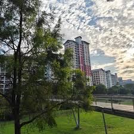

On a quiet afternoon, the city seemed to pause as a gentle breeze moved through the streets, carrying with it the distant hum of traffic and the laughter of people gathered in small cafés. Birds circled above the rooftops while sunlight reflected off glass windows, creating a soft glow that made everything feel calm and unhurried. In moments like these, even the busiest places can feel peaceful, reminding us to slow down and appreciate the simple details of everyday life.

Read more
This scene highlights how even in busy environments, moments of calm can exist, offering a chance to pause and reflect.
Visit Wikipedia
Visit OpenAI
Go to About Section (internal link/bookmark)
External Target Link
Go to External Target